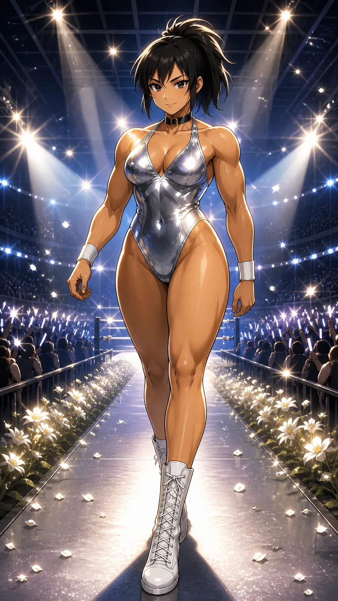

CHARACTER FILE

シルバフリル
Silver Frill
『光速の微笑、銀河を魅了するカリスマ』
基本情報
- 年齢
- 24歳
- 体格
- 170cm・長身グラマラス体型（気品とパワーを兼ね備えた均整ボディ）
必殺技
【スターダストパレード】前方へ跳び出し、空中でひねりを加える。遠心力を乗せた流星の一蹴が、きらめく軌跡を描いて炸裂する。
超必殺技
【コズミックブリリアンス】全身を輝かせながら一瞬で連撃を叩き込み、フィニッシュに光速蹴りを決める、観客を圧倒する最終演舞。
性格
気品、艶やかさ、勝負勘すべてを併せ持つ圧倒的センター。スマイル一つで場の空気を支配できるカリスマ性を持ち、冷静沈着に戦局をコントロールする。
ファイトスタイル
高速テクニカル＋コンビネーション型。一瞬の判断力と連携技術に長け、相手に考える隙を与えない。
相性
- 有利な相手
- 単発型パワーファイター（連携分断で優位に立てる）
- 不利な相手
- 長期戦耐久型（持久戦に持ち込まれると不利）
プロフィール
まばゆい銀のコスチュームをまとい、ひとたびリングに立てば誰もが魅了される存在──シルバフリル。その輝くスマイルと圧倒的統率力は、ユニバーサルユニットの銀河のような多様性を一つに束ねる重力であり、希望の象徴でもある。 かつては絶対的エース・セレナ・ルナの存在に支えられていたチームだが、彼女の突然の失踪により、空席となった“中心”を埋める役割をシルバフリルが一身に担うこととなった。不安に揺れる仲間を前にしても決して笑顔を絶やさず、「大丈夫、私たちは輝ける」と言い切るその背中が、チームの光となっている。 必殺技「スターダストパレード」は、観る者の心に星々のようなきらめきを灯し、勝利の未来を確信させる一撃。彼女は勝利の象徴であり、リングという銀河を導くカリスマの極致なのだ。
口癖
「ほら、瞬き禁止よ。」